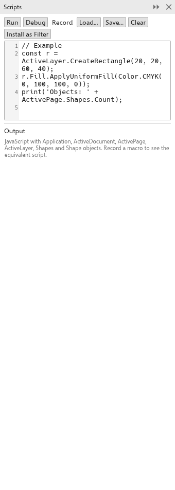

このページはまだ翻訳されていないため、英語で表示しています。
Scripts and automation
Scripts automate repetitive work: draw shapes from data, change many objects at once, or add a file format. They are written in JavaScript in the Scripts panel (Tools > Scripts > Scripts Panel).

Writing and running scripts
A script works with the objects of TraceDraw: Application, ActiveDocument, ActivePage, ActiveLayer and the shapes, fills, outlines, colors, curves and effects. For example:
for (let i = 0; i < 5; i++) {
ActiveLayer.CreateRectangle(10 + i * 25, 10, 20, 20);
}- Run runs the script. Its changes are one undo step.
- Record records what you do as a script (also Tools > Scripts > Record Macro).
- Load and Save open and save scripts; Run Script runs a script file.
- Clear empties the editor; the Output shows what the script prints and its errors.
Debugging
On the desktop, click in the margin of the editor to set a breakpoint, then click Debug. The script stops at the breakpoint: Continue, Step or Stop it, and type an expression to evaluate it where the script is paused.
Script filters
A script that defines TraceDrawFilter, with a name, extensions and an Import or Export function, adds a file format to Import and Export. Click Install as Filter to keep it; Script filters lists the installed filters with Edit and Remove.
AI assistants (MCP)
TraceDraw speaks the Model Context Protocol, so AI assistants on your computer can open, edit, inspect, export and save drawings:
tracedraw --mcpruns TraceDraw without a window for an assistant.- To let an assistant edit the drawing open in your window, turn on Let AI agents on this computer edit the open drawing (MCP) on the General page of Tools > Options > Global, and give the assistant
tracedraw --mcp-windowas its command. Each change is one undo step you can take back. Only programs on your computer with the secret token TraceDraw writes can connect.
The command-line tool
Every download also has tracedraw-cli, which converts drawings between formats without opening the program, for batch work.
Macros
TraceDraw runs VBA macro projects written for drawing programs (desktop version). Tools > Macros > Load Macro Project adds a project (.gms) or module files (.bas, .cls, .frm); projects are kept and load at start-up. The Macro Manager lists their macros: double-click one or use Tools > Macros > Run Macro (Alt+Shift+F8) to run it. A macro's forms, message boxes and input boxes appear on screen, Esc or Tools > Macros > Stop Macro stops it, and everything one run changes is one undo step. Tools > Macros > Macro Editor (Alt+F11) shows and edits the code. Macros that call Windows functions or the editor's own object model do not run.